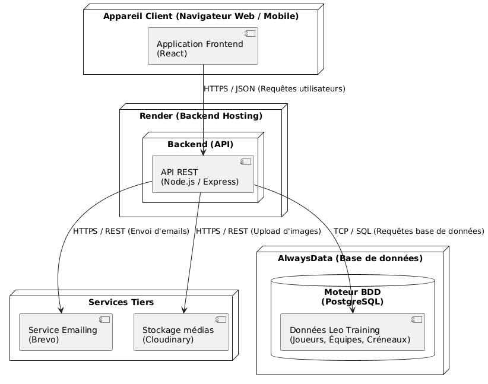
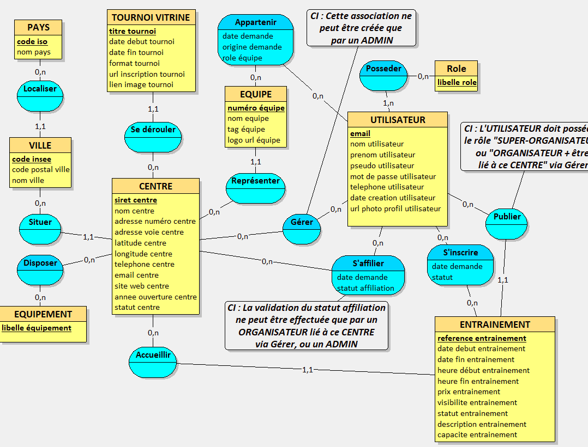
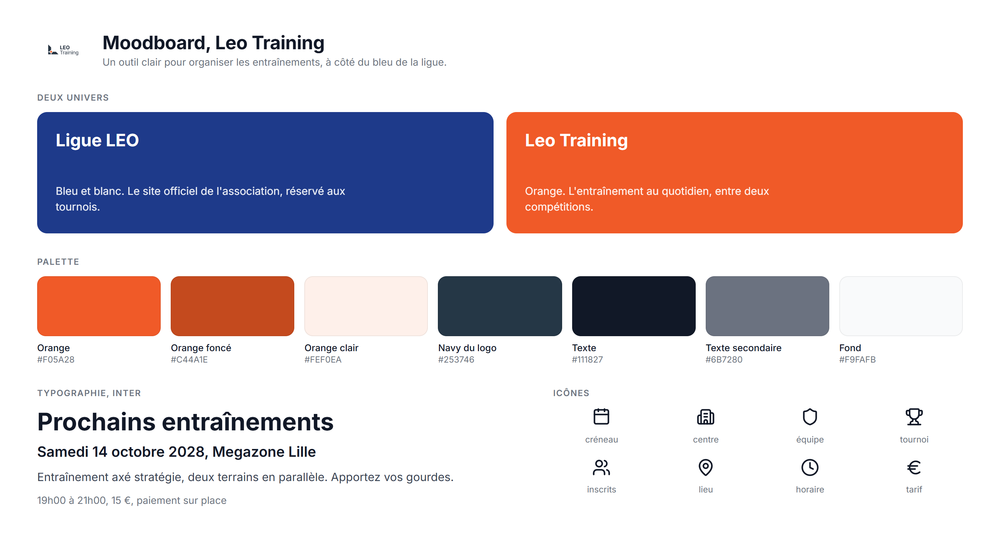
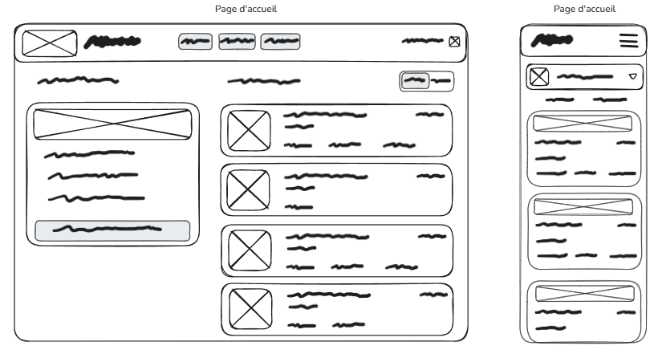
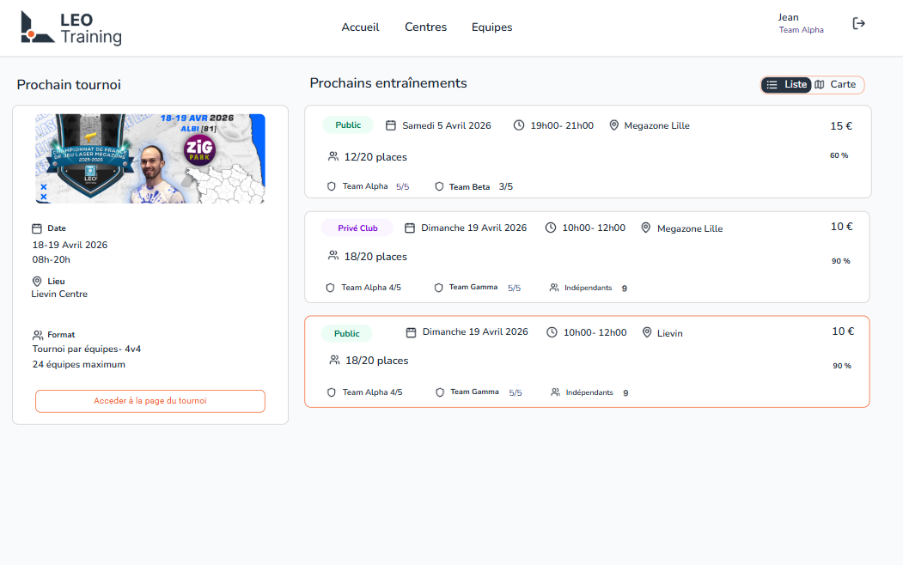
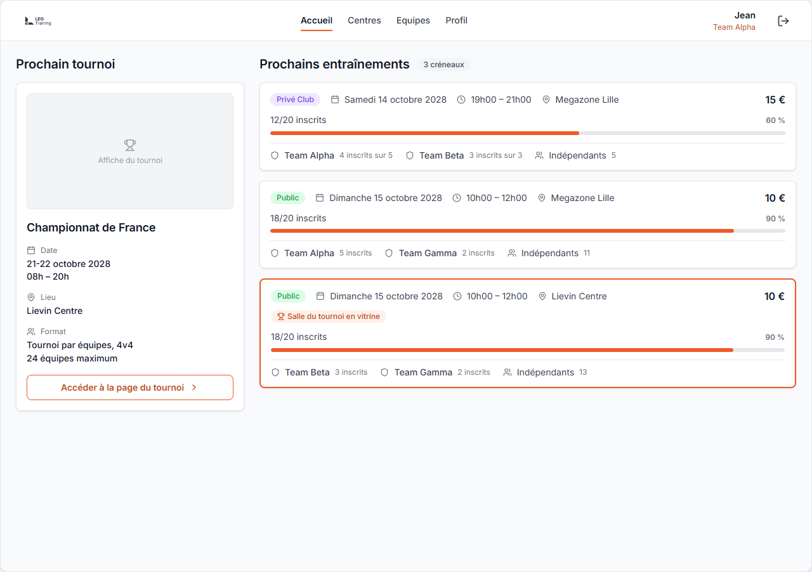
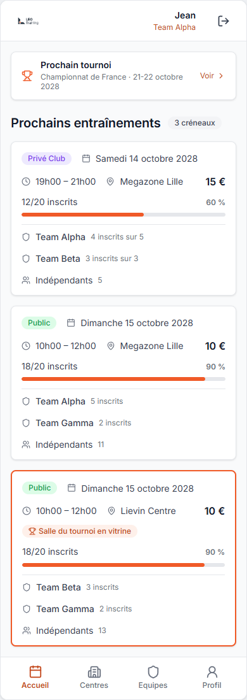

Le hub des entraînements de la ligue LEO. Les centres publient leurs créneaux, les joueurs s'inscrivent en un clic, les places se mettent à jour en continu.







| PRD, spécifications Gherkin, architecture | fait |
| MCD, MLD, MPD et DDL | fait |
| Charte, design system, douze écrans | fait |
| Recherche JTBD, trois sources | étape A |
| Export PNG des diagrammes restants | étape B et C |
| Pitch de dix minutes et retours des pairs | étape D |